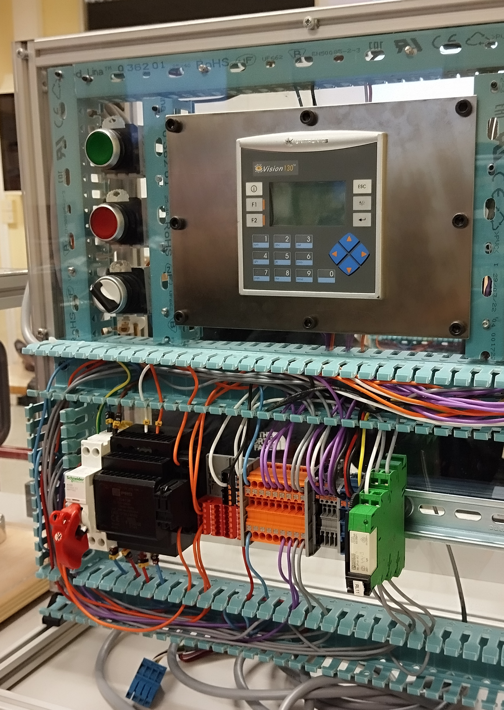
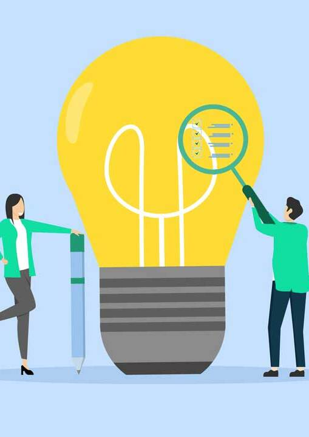
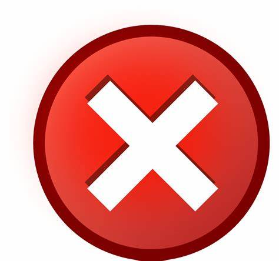
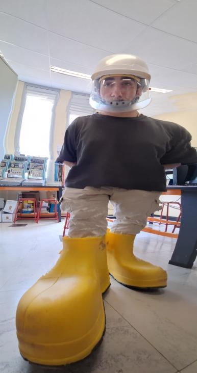
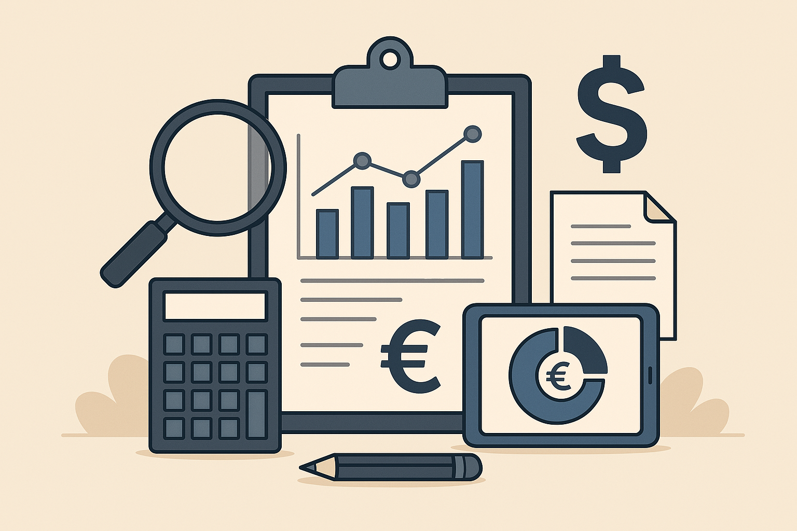
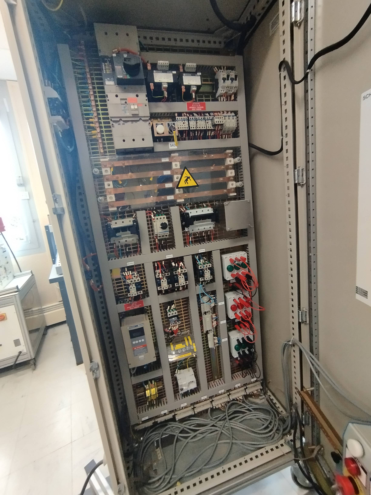

Détecter des pannes dans des armoires électriques
PORTFOLIO BUT2
Concevoir

Concevoir
Verifier
Integrer
Maintenir

Stage AgroMousquetaire : Projet SAVIEL Janzé
Réalisation d'un Chiffrage et analyse d'un projet
Concevoir

Maquette de gestion d'une serre
Réalisation d'une maquette suite à un cahier des charges
Concevoir

Stage AgroMousquetaire : Projet SAVIEL Janzé
Évaluation de la faisabilité technique d'un projet
Verifier

Habilitation Electrique B2V BR
Maintenir
NAME
Competence
Intégrer
Réalisation d'un Chiffrage et analyse d'un projet
☐ En réalisant l'analyse et le chiffrage du projet Janzé Saviel, j'ai pu développer plusieurs compétences essentielles pour un futur ingénieur en GEII.
☐ Tout d'abord, j'ai appris à décomposer un projet industriel pour en comprendre les besoins techniques et fonctionnels. Cela m'a permis de mieux appréhender la structuration d'un cahier des charges et d'identifier les contraintes à prendre en compte, qu'elles soient techniques, budgétaires ou normatives.
☐ Ensuite, l'aspect chiffrage m'a confronté à la réalité économique des projets. J'ai découvert comment estimer les coûts des équipements et des prestations, en tenant compte des exigences du client et des standards en vigueur. Cela m'a permis de mieux comprendre les enjeux de rentabilité et d'optimisation dans un projet industriel.
☐ Enfin, cette expérience m'a aussi appris à manipuler des outils professionnels, que ce soit pour l'analyse technique, la gestion budgétaire ou la présentation des résultats. J’ai pris conscience de l’importance de la rigueur dans la rédaction de documents et dans la communication avec les différents acteurs du projet.

Réalisation d'une maquette suite à un cahier des charges
☐ Dans le cadre de ce projet, j’ai réalisé en binome une maquette de contrôle de serre, permettant de réguler la température à l’aide d’une résistance thermique et d’une sonde de température. Cette maquette comprend également deux boutons (Marche/Arrêt) pour activer ou désactiver le système.
☐ Ma première étape a été l’analyse du besoin et de la maquette existante, afin de bien comprendre le fonctionnement du système et d’identifier les éléments à reproduire. Cette analyse était essentielle pour assurer la cohérence du câblage et le respect des normes, notamment en ce qui concerne l’attribution des couleurs des fils et l’organisation des connexions.
☐ Ensuite, j’ai réalisé le schéma électrique sous SeeElectrical, en représentant précisément chaque composant du système : la résistance thermique, la sonde de température, les boutons de commande, ainsi que les connexions avec l’alimentation et les actionneurs. Cette étape m’a permis d’améliorer ma maîtrise de l’outil et d’appréhender l’importance d’un schéma bien structuré pour la mise en œuvre du câblage.
☐ Enfin, j’ai effectué le câblage de la maquette, en suivant scrupuleusement le schéma électrique et en respectant les règles de sécurité et de lisibilité. Cette phase demandait de la rigueur pour garantir un bon fonctionnement du système et faciliter d’éventuelles interventions futures.
Grâce à ce projet, j’ai pu renforcer mes compétences en analyse de systèmes automatisés, en conception de schémas électriques et en câblage industriel. J’ai également pris conscience de l’importance du respect des normes et des bonnes pratiques pour assurer la fiabilité et la sécurité d’un montage électrique.

Évaluation de la faisabilité technique d'un projet
☐ En réalisant l’évaluation de la faisabilité technique du projet Janzé, j’ai acquis plusieurs compétences essentielles pour analyser et valider un projet industriel.
☐ Tout d’abord, j’ai appris à identifier et vérifier les contraintes techniques, normatives et budgétaires qui influencent la faisabilité d’un projet. Cette démarche m’a permis de mieux comprendre comment anticiper les risques et proposer des solutions adaptées aux exigences du client.
☐ Ensuite, cette mission m’a permis de développer une approche méthodique de la vérification, en confrontant les besoins du projet aux capacités techniques des équipements et aux contraintes d’installation. J’ai ainsi renforcé ma capacité à analyser des documents techniques, tels que des fiches produits, des normes en vigueur et des plans d’implantation.
☐ J’ai également pris conscience de l’importance de la communication avec les différents acteurs du projet, que ce soit pour valider certains choix techniques ou ajuster les estimations budgétaires en fonction des contraintes identifiées.
☐ Cette image montre le plan de l'usine discuté lors d'une réunion réunissant le chef de projet, l'informaticien, les dessinateurs, l'automaticien, etc. L'objectif était de déterminer la position et les dimensions d'un nouveau SAS hygiène pour l'entrée en production, ce qui implique de nouvelles arrivées de froid et d'électricité.
☐ Enfin, ce travail m’a permis de mieux appréhender la gestion des incertitudes dans un projet industriel et d’affiner ma capacité à prendre du recul pour évaluer la cohérence et la viabilité d’une solution technique.
☐ Grâce à cette expérience, j’ai renforcé mes compétences en analyse technique, en vérification de conformité et en prise de décision, des compétences clés pour évoluer dans un bureau d’études et, à terme, dans la gestion de projets industriels.

Habilitation électrique B2V BR
☐ Dans le cadre de ma formation, j’ai passé l’habilitation électrique B2V BR, ce qui m’a permis de développer la compétence "Maintenir un système automatisé".
☐ Lors de cette formation, j’ai appris à travailler en sécurité sur des installations électriques, à repérer et diagnostiquer des pannes dans une armoire électrique, et à utiliser les outils de mesure adaptés comme le multimètre ou le VAT (vérificateur d’absence de tension).
☐ Par exemple, lors d’un exercice pratique, nous avons été confrontés à un défaut d’alimentation dû à un fusible grillé dans un sectionneur. Après avoir identifié le problème, j’ai dû remplacer le fusible en veillant à bien le dimensionner, afin qu’il protège efficacement le circuit sans risquer de sauter à nouveau lors d’un fonctionnement normal. Ce type d’intervention m’a permis de mettre en œuvre une démarche de diagnostic et de correction, tout en respectant les règles de sécurité électrique.
☐ Grâce à cette expérience, j’ai compris l’importance de la maintenance curative et préventive dans la fiabilité des systèmes industriels.
